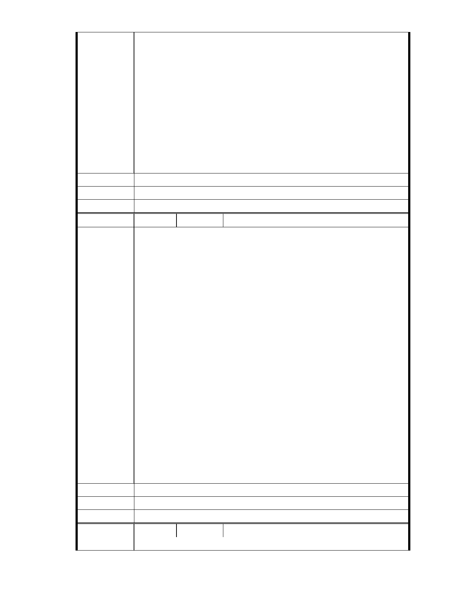

憐惜已遭破壞的場地，設想：承購下來後，須作妥善規劃：維護自然生
態、改造現有環境；成為志業中心、共修道場等之願景。
然而期盼多年，園區改建工程，卻遲遲未獲通過。
郝長官，您是否曾蒞臨內湖園區？ 如能有更進一步的了解， 就事實的
真相，站在公正立場，必會力排異議，敬請多多成全。
大家同心協力、眾志成城，祈求能早日實現，這塊福田的改造，深繫台
灣、放眼國際、未來美好之遠景。功德無量！感恩您！
恭祝 春節快樂、吉祥如意
小市民 高榮茂 敬上
2013/2/20 夜
建議辦法
市 府 說 明 相關陳情意見將納入本案審查人民意見，依法定程序辦理。
委 員 會 決 議 同編號 1。
編
號 247
陳情人 MA201303110416
各位審查委員, 我對慈濟內湖園區的改善計畫有一個看法想就教於各位:
幾十年來現址就已經被慈濟之前的地主破壞成了一片破爛柏油地面,和一
棟棟如難民窟般醜陋的鐵皮屋
你我都知道附近居民不可能出錢去把地買回來復育回原貌, 政府也不可
能如此做,那我們是不是只能看著它永遠爛下去也不讓別人改善?
陳情理由
若希望有人花大錢幫我們改善,給他們些好處可不可以?就像都更計劃的
精神一樣,最後達成政府建商及住戶三贏的結果不是很好嗎?我認為現狀
是零分,只要合法又不減損安全的情行下,有人願出錢把一半以上的地貌
改善成綠地公園,就應算是可接受的六十分方案.
而慈濟改善計畫中有三分之二的綠化公園及滯洪池,三分之一為綠建築,
做為圖書館等公益設施,雖不能說完美,但也有八十分以上. 我們付出的也
只是和都更案的建敝率及容積率優惠一樣而已,讓慈濟案通過也可實現如
都更一樣的三贏.
反之,不通過就是放著八十分不要,而回到零分,那我們不也成了破壞者的
幫兇,讓這被破壞的地貌繼續存在,無法獲得改善?
建議辦法
市 府 說 明 相關陳情意見將納入本案審查人民意見，依法定程序辦理。
委 員 會 決 議 同編號 1。
編
號 248
陳情人 台灣蠻野心足生態協會
陳 情 理 由 102 年 3 月 14 日「擬定台北市內湖區成功路五段大湖公園北側社會福
- 292 -